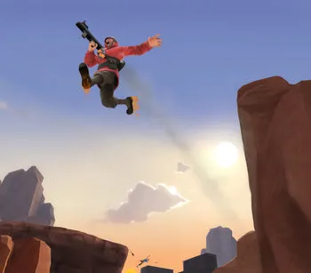

At first glance, TF2's Soldier class is nothing special. Though his rocket launcher deals a decent amount of damage and knockback, the projectile is a bit slow and certain classes can either delete the projectile from existence or deflect it back at the Soldier. Fighting at close range is also a risk for the Soldier, as the rocket explosions can actually deal self-damage, albeit less damage than it would have dealt to enemies, meaning it's entirely possible for the Soldier to kill himself while fighting. Soldier's personal stats can also be a bit unappealing, as though he does have the second highest HP in the game, his movement speed is the second slowest, which is quite bad in a game where the main objective is often to get to a point to either capture it or protect it from the enemy. At most, it seems that the Soldier is just an average combat character that deals respectable damage and can make some space with knockback, right?
Wrong. This initial evaluation fails to take into account rocket jumping, which patches up much of the Soldier's worse qualities and is a huge reason why the Soldier is both the single most popular class among the TF2 playerbase as well as why he can be so dominant in higher play. The way Soldier rocket jumps revolves around a mechanic that I previously painted as a downside: self-damage. Though it can be disadvantageous in many situations, getting caught in your rocket's explosion deals a huge amount of knockback to you under the right conditions, often sending you into the air. This knockback can of course be manipulated to propel you in your desired direction, and it's this manipulation that we call the rocket jump. Rocket jumping is quite simple, only really having a few steps.
